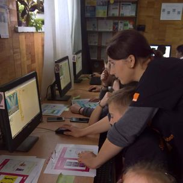
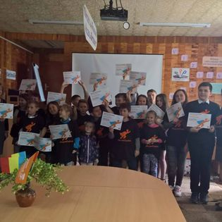

Chitorog Ana
|
Profesoară
Română, Engleză, Rusă chitorog.ana@ialoveni.edu.md +373 68 511 111 |
Activitatea pedagogică: M-am angajat în Liceul Teoretic Costești, în funcție de profesor de Informatică în septembrie 2007, și activez până în prezent. Pe parcursul anilor am predat în toate clasele 7-12 obiectul informatica , în conformitate cu curricula în vigoare ,din 2019S am predat și cursul opțional TIC la clasele a 10-a. Am pregătit elevi pentru olimpiadele raionale, am avut elevi care au obținut locurile 1,2,3,4 și mențiuni. Am participat la diverse cursuri de formare , seminare raionale, și chiar republicane la Informatică, am participat la verificarea testelor de la olimpiada raională, am organizat și desfășurat diverse seminare și treninguri legate de disciplina Informatica și de dezvoltare a competențelor digitale a cadrelor didactice la nivel de instituție, cât și la nivel de raion. |
|  |  |
Experința de lucru
profesor de informatică
august 2023-prezentProfesor în cadrul proiectului Tekwill în fiecare școală
profesor de informatică
septembrie 2007-prezentProfesor în IP Liceul Teoretic Costești
profesor de informatică
februarie 2007-septembrie 2007Profesor în Liceul Alexandru Ioan Cuza, Chișinău
Educație
Studii de master
septembrie 2022-prezentStudii de master IT în educație USM Chișinău
Studii de licență
septembrie 2003-iunie 2007Studii de licență, UPS, Chișinău